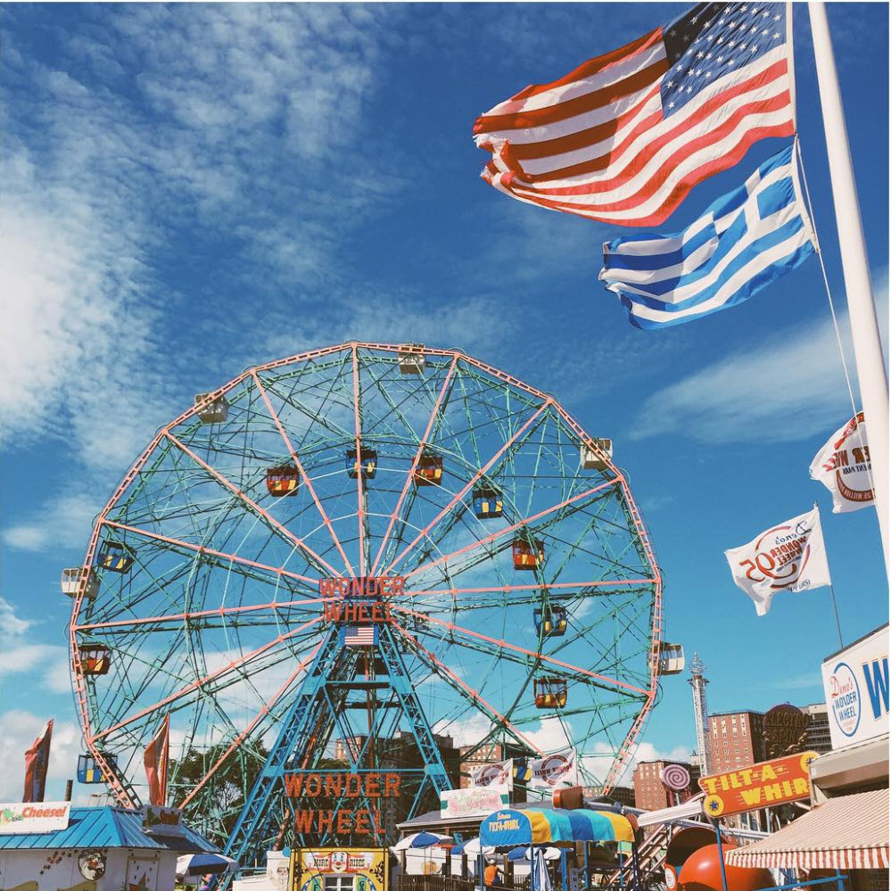
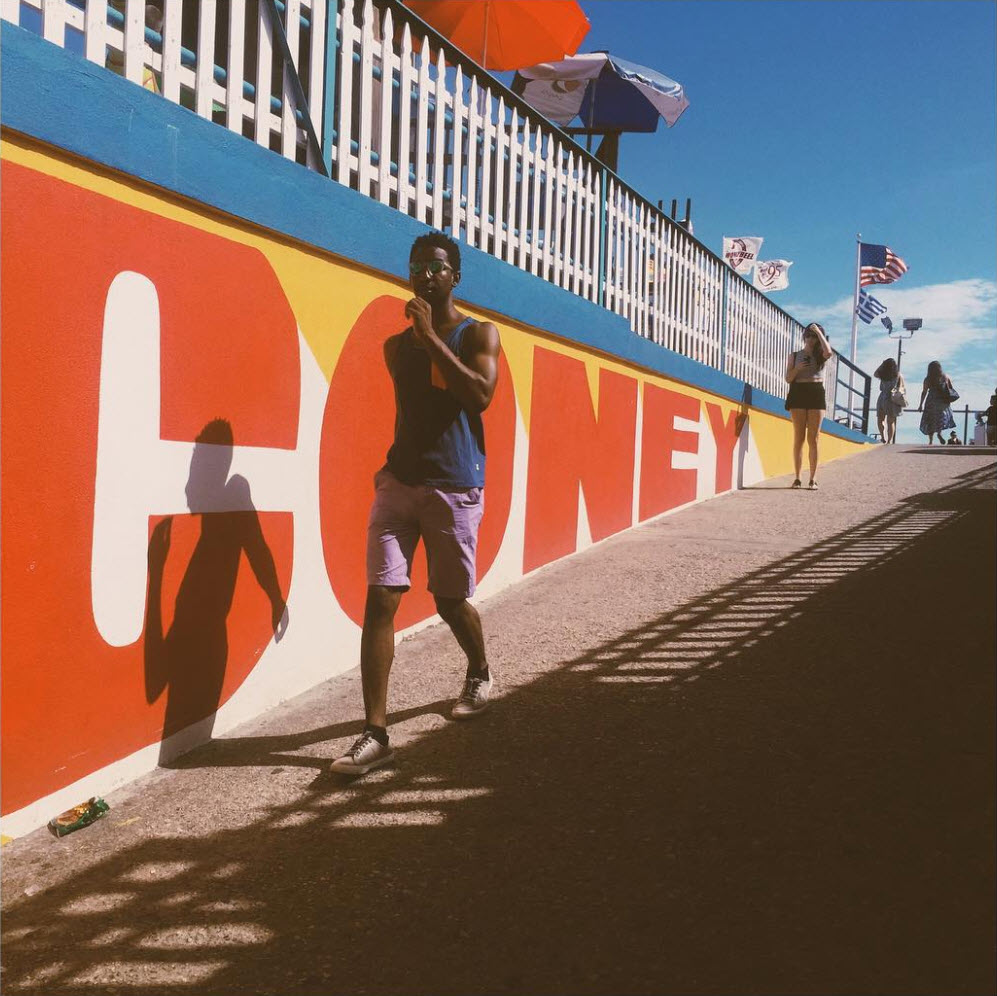
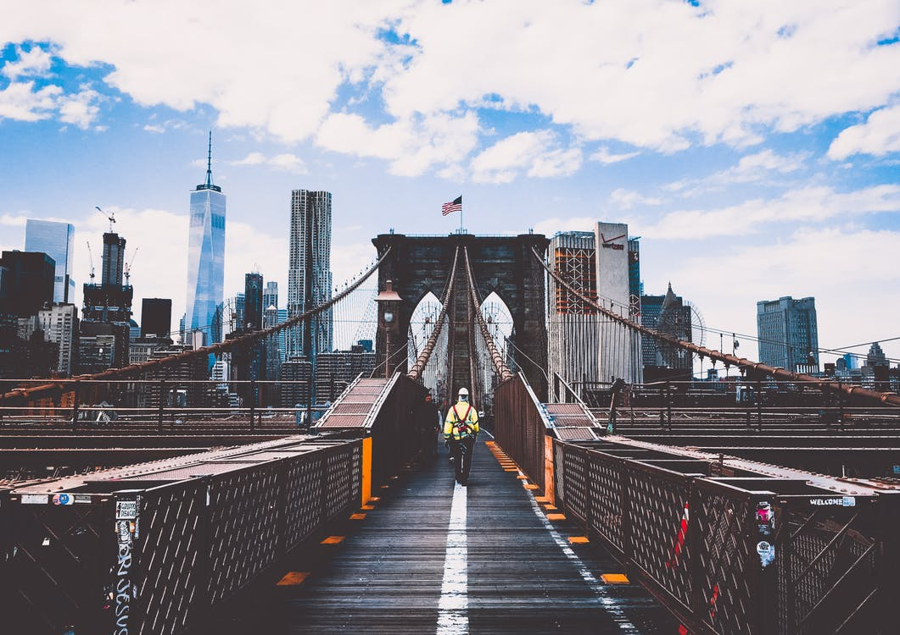
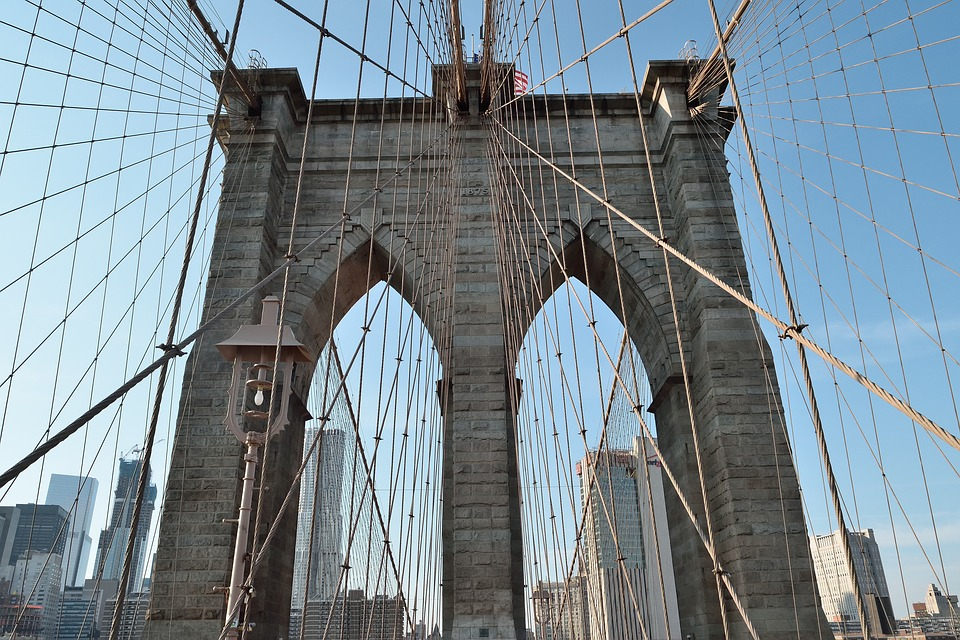

Coney Island is a New York City neighborhood that features an amusement area that includes 50 or more separate rides and attractions; it's not a centrally managed amusement park like Disneyland or Six Flags. As a result, specific questions about rides, filming privileges, etc., should be directed to individual businesses. This website is maintained by Coney Island USA, the not for profit arts organization that runs the Mermaid Parade, the Sideshow and the Coney Island Museum, among other programs.
Coney Island is a seasonal center operating roughly between Easter and Halloween. Rides and attraction are generally open on weekends
from Easter until Memorial Day, all week long from Memorial Day until Labor Day, and then weekends from Labor Day until the end of
October. The beach and boardwalk are open all year round (although lifeguards are only on duty from Memorial Day to Labor Day) and
Nathan's Hot Dogs and the New York Aquarium are open almost every day of the year.

The Brooklyn Bridge is a hybrid cable-stayed/suspension bridge in New York City and is one of the oldest bridges in the United States. Started in 1869 and completed fourteen years later in 1883, it connects the boroughs of Manhattan and Brooklyn by spanning the East River. It has a main span of 1,595.5 feet (486.3 m) and was the first steel-wire suspension bridge constructed. It was originally called the New York and Brooklyn Bridge and the East River Bridge, but it was later dubbed the Brooklyn Bridge, a name coming from an earlier January 25, 1867, letter to the editor of the Brooklyn Daily Eagle and formally so named by the city government in 1915. Since opening, it has become an icon of New York City and was designated a National Historic Landmark in 1964 and a National Historic Civil Engineering Landmark in 1972
